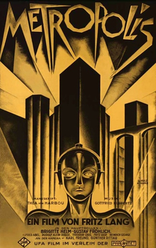

METROPOLIS
Paramount Pictures | Release date: Mar 13, 1927

8.3
Metascore
Universal acclaim
based on 39 Critics
- Director: Fritz Lang
-
Starring: Brigitte Helm, Alfred Abel, Gustav Fröhlich
-
Summary: In a futuristic city sharply divided between the working class and the city
planners, the son of the city's mastermind falls in love with a working class hero who
predicts the coming of a savior to mediate their differences.